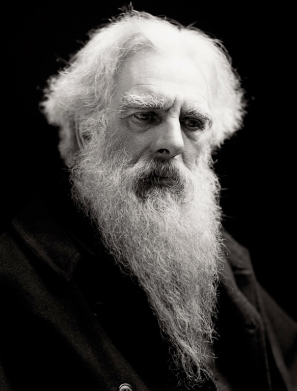

Edward James Muggeridge
(Kingston upon Thames, 9 de abril de 1830-ibídem, 8 de mayo de 1904)
Conocido con el seudónimo de Eadweard Muybridge, fue un fotógrafo e investigador británico. Cambió su nombre cuando emigró a los Estados Unidos. Allí se formó y comenzó a trabajar para el Coast and Geodetic Survey.
En el año 1872 se le acusó del asesinato del amante de su mujer y, aunque fue absuelto, se vio obligado a viajar durante varios años por América Central y del Sur, donde fotografió la construcción de líneas ferroviarias.
En 1878 demostró mediante fotografías que cuando un caballo corre hay un momento en el que ninguna de las patas del animal se apoya en el suelo y durante este instante las dobla hacia dentro.
Su trabajo fue de gran importancia para el cine, ya que logró la primera serie de fotografías que descompone el movimiento rápido.

Al tener tan solo 12 fotogramas, la animación es muy poco fluida y se ven claramente los saltos de un fotograma al siguiente.

Con 20 fotogramas la animación es muy fluida y nos da la sensación perfecta de movimiento.
Con 24 fotogramas la animación es muy fluida, y al coincidir el último y el primer fotograma, se produce el efecto de bucle infinito.
Al eliminar los bordes de los fotogramas y estar bastante bien alineados los fotogramas, da la sensación de ser un vídeo.
El propio Muybridge nos lo explica en el siguiente vídeo:
Animación de Eadweard Muybridge para la tarea 07 de DIW
Ver el vídeo en Youtube